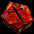
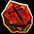

クレスト

盗掘王の秘宝やコスチューム分解により、下級/中級/上級クレストを入手することができる。
| クレストの種類 | ||||||||
|---|---|---|---|---|---|---|---|---|
| 等級 | 下級 | 中級 | 上級 | 最上級 | 究極 | 超級? | 超級? | デュアル |
| 入手方法 | 盗掘王の 秘宝 レアコスチューム 分解 |
レア/ユニーク/プレミアム コスチューム分解 |
上級クレストから合成 | 最上級クレストから 合成 |
キャンペーン限定 | |||
| 赤色 攻撃系 |
 |  | ||||||
| 青色 防御系 |
||||||||
| 金色 ステータス |
||||||||
究極クレストの全属性抵抗弱化・全属性攻撃力強化は合成では生成されない。
デュアルクレストは合成素材にすることはできない。
※究極クレストやデュアルクレストの一部は日本では未実装。
| 攻撃系オプション | |||||||
|---|---|---|---|---|---|---|---|
| オプション効果 | 下級 | 中級 | 上級 | 最上級 | 究極 | 超級? | 超級? |
| 物理攻撃力増加+[n]％ | 10~20 | 25~35 | 40~50 | 55~65 | - | - | - |
| PVP時に攻撃力増加+[n]％ | 3~8 | 9~14 | 15~20 | 21~26 | 27~32 | 35 | 45 |
| 攻撃速度 +[n]％ | 1~2 | 3~4 | 5~6 | 7~8 | 9~10 | 15 | 30 |
| 強打率+[n]％ | 1~2 | 3~4 | 5~6 | 7~8 | 9~10 | - | - |
| 命中率 +[n]％ | 1~2 | 3~4 | 5~6 | 7~8 | - | - | - |
| クリティカル +[n]％ | 1~2 | 3~4 | 5~6 | 7~8 | - | - | - |
| 魔法致命打発生確率+[n]％ | 1~2 | 3~4 | 5~6 | 7~8 | - | - | - |
| クリティカルダメージ増加+[n]％ | 1~2 | 3~4 | 5~6 | 7~8 | - | - | - |
| ダブルクリティカルダメージ増加+[n]％ | 1~2 | 3~4 | 5~6 | 7~8 | - | - | - |
| 火属性の攻撃力を [n]％ 強化させる。 | 2~10 | 12~20 | 22~30 | 32~40 | - | - | - |
| 水属性の攻撃力を [n]％ 強化させる。 | 2~10 | 12~20 | 22~30 | 32~40 | - | - | - |
| 風属性の攻撃力を [n]％ 強化させる。 | 2~10 | 12~20 | 22~30 | 32~40 | - | - | - |
| 大地属性の攻撃力を [n]％ 強化させる。 | 2~10 | 12~20 | 22~30 | 32~40 | - | - | - |
| 光属性の攻撃力を [n]％ 強化させる。 | 2~10 | 12~20 | 22~30 | 32~40 | - | - | - |
| 闇属性の攻撃力を [n]％ 強化させる。 | 2~10 | 12~20 | 22~30 | 32~40 | - | - | - |
| ターゲットの火の抵抗を [n]％ 弱化させる。 | 2~5 | 7~10 | 12~15 | 17~20 | - | - | - |
| ターゲットの水の抵抗を [n]％ 弱化させる。 | 2~5 | 7~10 | 12~15 | 17~20 | - | - | - |
| ターゲットの風の抵抗を [n]％ 弱化させる。 | 2~5 | 7~10 | 12~15 | 17~20 | - | - | - |
| ターゲットの大地の抵抗を [n]％ 弱化させる。 | 2~5 | 7~10 | 12~15 | 17~20 | - | - | - |
| ターゲットの光の抵抗を [n]％ 弱化させる。 | 2~5 | 7~10 | 12~15 | 17~20 | - | - | - |
| ターゲットの闇の抵抗を [n]％ 弱化させる。 | 2~5 | 7~10 | 12~15 | 17~20 | - | - | - |
| 難易度 [n] 以下スキルレベル1増加 | 2 | 3 | 4 | 5 | - | - | - |
| 難易度 [n] 以下スキルレベル2増加 | - | - | - | - | 5 | - | - |
| ※ ターゲットの全ての属性抵抗を [n]％ 弱化させる。 | - | - | - | - | 23~27 | - | - |
| ※ 全ての属性の攻撃力を [n]％ 強化させる。 | - | - | - | - | 48~52 | - | - |
| 防御系オプション | |||||||
|---|---|---|---|---|---|---|---|
| オプション効果 | 下級 | 中級 | 上級 | 最上級 | 究極 | 超級? | 超級? |
| 防御力 +[n]％ | 10~20 | 35~45 | 60~75 | 90~105 | 120~135 | - | - |
| PVP時に防御力増加+[n]％ | 3~8 | 9~14 | 15~20 | 21~26 | 27~33 | 35 | 45 |
| 最大HP +[n]％ | 2~4 | 5~7 | 8~10 | 11~13 | 14~17 | 30 | 50 |
| クリティカルダメージ減少+[n]％ | 1~2 | 3~4 | 5~6 | 7~8 | - | - | - |
| ダブルクリティカルダメージ減少 +[n]％ |
1~2 | 3~4 | 5~6 | 7~8 | - | - | - |
| 回避率 +[n]％ | 1~2 | 3~4 | 5~6 | 7~8 | 9~10 | - | - |
| ブロック率 +[n]％ | 2~4 | 5~7 | 8~10 | 11~13 | - | - | - |
| ブロッキング速度+[n]％ | 3~8 | 9~14 | 15~20 | 21~26 | - | - | - |
| ダメージ リターン [n]％ | 3~8 | 9~14 | 15~20 | 21~26 | - | - | - |
| 火 抵抗 +[n]％ | 3~8 | 9~14 | 15~20 | 21~26 | - | - | - |
| 水 抵抗 +[n]％ | 3~8 | 9~14 | 15~20 | 21~26 | - | - | - |
| 風 抵抗 +[n]％ | 3~8 | 9~14 | 15~20 | 21~26 | - | - | - |
| 大地 抵抗 +[n]％ | 3~8 | 9~14 | 15~20 | 21~26 | - | - | - |
| 光 抵抗 +[n]％ | 3~8 | 9~14 | 15~20 | 21~26 | - | - | - |
| 闇 抵抗 +[n]％ | 3~8 | 9~14 | 15~20 | 21~26 | - | - | - |
| 移動速度 [n]％増加 | 1~5 | 6~10 | 11~15 | 16~20 | - | - | - |
| ステータスオプション | |||||||
|---|---|---|---|---|---|---|---|
| オプション効果 | 下級 | 中級 | 上級 | 最上級 | 究極 | 超級? | 超級? |
| 力 +[n] | 35~50 | 60~75 | 85~100 | 110~125 | 135~150 | - | - |
| 敏捷 +[n] | 35~50 | 60~75 | 85~100 | 110~125 | - | - | - |
| 健康 +[n] | 35~50 | 60~75 | 85~100 | 110~125 | 135~150 | 120 | 150 |
| 知識 +[n] | 35~50 | 60~75 | 85~100 | 110~125 | 135~150 | - | - |
| 知恵 +[n] | 35~50 | 60~75 | 85~100 | 110~125 | - | - | - |
| カリスマ +[n] | 35~50 | 60~75 | 85~100 | 110~125 | - | - | - |
| 運 +[n] | 35~50 | 60~75 | 85~100 | 110~125 | 135~150 | - | - |
| デュアルクレスト | ||
|---|---|---|
| オプション | 効果 | |
| ※ 攻撃速度とPVP攻撃力 | 攻撃速度 +10％ , PVP時に攻撃力増加+10％ | |
| ※ 強打発動確率とPVP攻撃力 | 強打率+10％ , PVP時に攻撃力増加+10％ | |
| ※ 強打発動確率と攻撃速度 | 強打率+10％ , 攻撃速度 +10％ | |
| ※ 回避率と最大体力 | 回避率 +10％ , 最大HP +10％ | |
| ※ PVP防御力と最大体力 | PVP時に防御力増加+10％ , 最大HP +10％ | |
| ※ 回避率とPVP防御力 | 回避率 +10％ , PVP時に防御力増加+10％ | |
| 力と健康 | 力 +150 , 健康 +150 | |
| 知識と健康 | 知識 +150 , 健康 +150 | |
| 運と健康 | 運 +150 , 健康 +150 | |